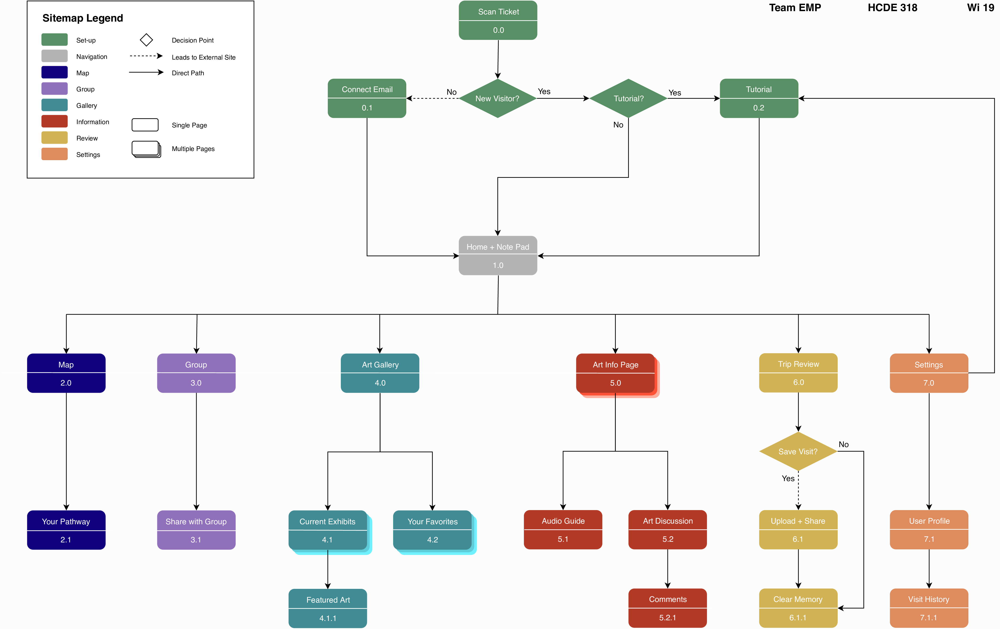

Information Architecture
With our original brainstorm with interface designs and storyboards, we then created our Information Architecture to create the first draft of our product layout. We listed out all the pages we valued and wanted as part of our design. After working on our information architecture, we took our layout and created our low-fidelity paper prototype.

Takeaways
From our information architecture, we learned how to:
- Organize the functions, order, and layout of the features of our product
- Develop the interaction flow of our product
